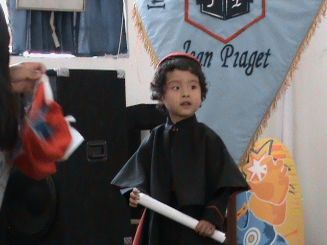

Alan Patrizio Alvarez Puma
Primeros años
Al inicio cuando recibi mi educación inicial y principos de la educación primaria constantemente por diversos motivos ya sea ubicación o personales constantemente cambiaba de escuela incluso que en 1 solo año llegue a estar en 4 colegios distintos pero almenos tengo gratos recuerdos de algunos de ellos como cuando estuvo en el colegio Jean Piaget

Colegio San José
Después de esta epoca movida de constante cambio de colegio mis padres decidieron meterme en el que seria mi colegio de toda la primaria y secundaria, el colegio privado San José Jesuitas , donde estoy muy agradecido por la formación que me dieron ya que en la actualidad varias cosas que me enseñaron no solo en la formación academica sino personal me han ayudado para esta nueva etapa que vivo la universitaria.

Universidad Católica San Pablo
El año pasado iniciando mi primer año de vuelta a clases gracias a la pandemia a mediados de años me llego la oportunidad de poder dar el examen para ingresar a la UCSP algo que me emociono mucho debido a que tenian la carrera que me interesaba Ciencia de la Computación por ello me esforze y logre ingresar en la cual estoy en este momento cursando el II semestre. Puedo decir en el poco tiempo que llevo que ha sido muy interesante poder a diferencia del colegio ver cosas más especificas a tus areas de interes en este caso la computación y poder aprender lo necesario.